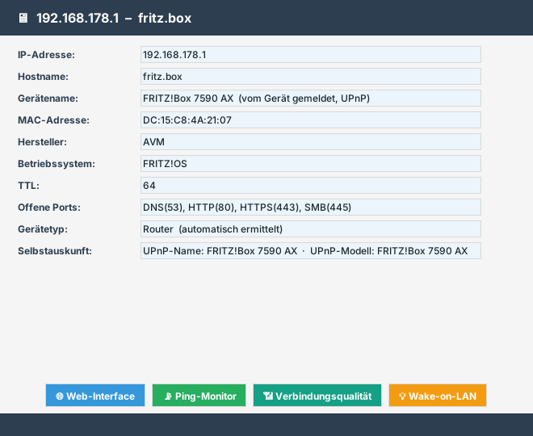
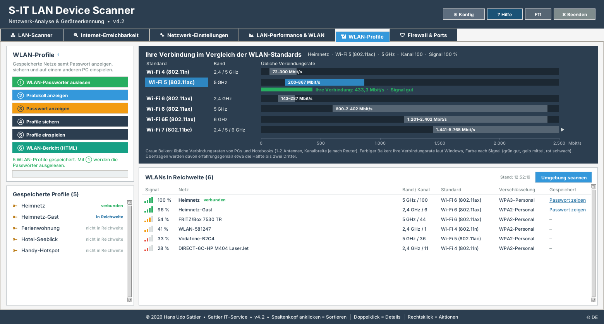
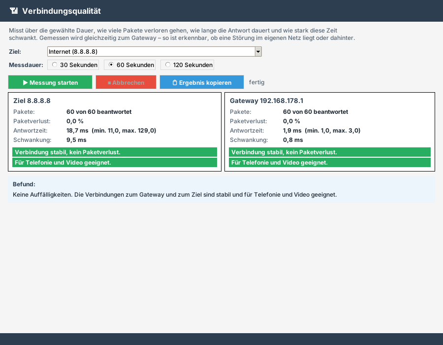
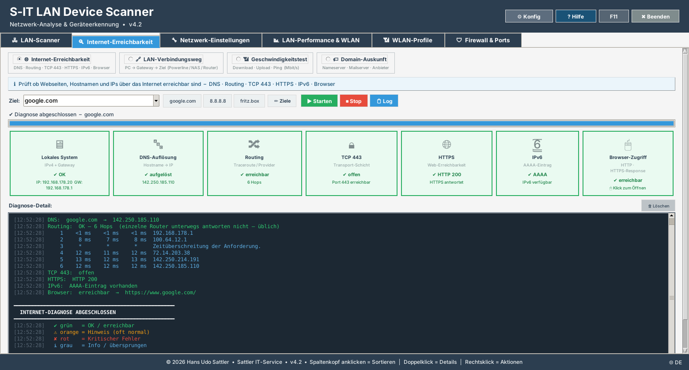
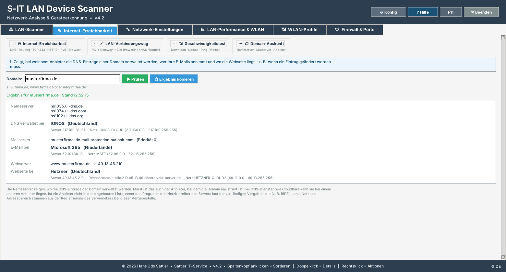
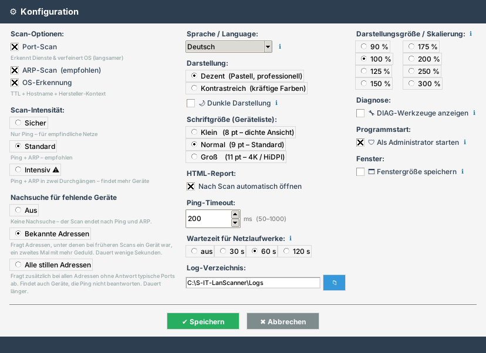
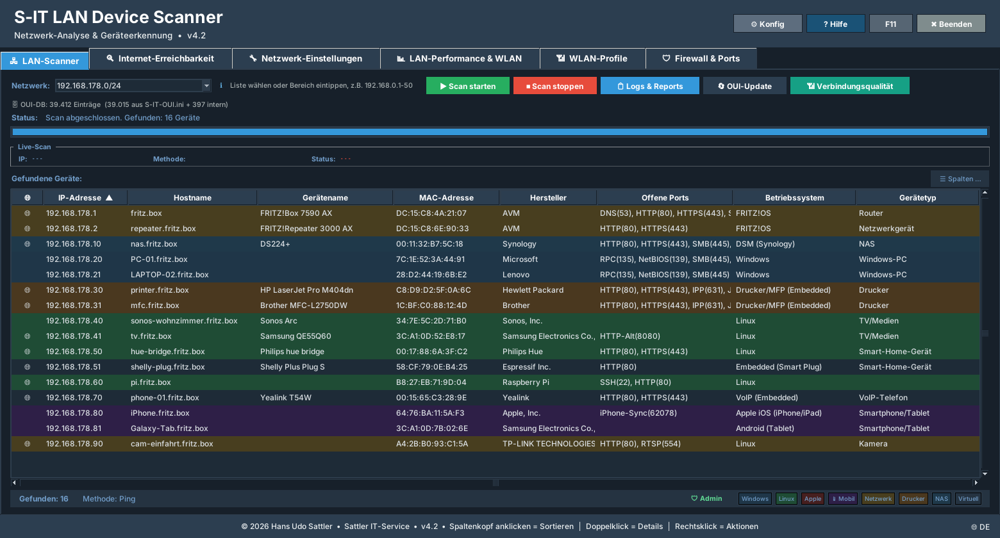

Netzwerk-Scan
Findet die Geräte im LAN und WLAN per Ping und ARP und zeigt IP-Adresse, Hostname, MAC-Adresse, Hersteller, Betriebssystem und offene Ports. Der ARP-Scan nutzt die eingebaute Funktion von Windows – eine Zusatzinstallation ist nicht nötig.
Gerätetyp und Gerätename NEU
Jedes Gerät wird anhand mehrerer Hinweise einem Typ zugeordnet – vom Router über Drucker und NAS bis zu Kamera, Smart-Home-Gerät und VoIP-Telefon. Die Zeilenfarbe folgt dem Typ. Die Spalte „Gerätename“ zeigt, was ein Gerät auf Nachfrage selbst meldet; per Rechtsklick lassen sich Name, Hersteller und Typ selbst festlegen.
Nachsuche für fehlende Geräte NEU
Adressen, unter denen bei früheren Scans ein Gerät war, werden ein zweites Mal mit mehr Geduld gefragt. Auf Wunsch fragt die Nachsuche bei allen stillen Adressen typische Ports ab – so erscheinen auch Geräte, die Ping nicht beantworten.
WLAN-Profile NEU
Zeigt die auf diesem PC gespeicherten WLAN-Netze samt Passwort, sichert sie und spielt sie auf einem anderen PC ein. Eine Grafik ordnet die eigene Verbindung in die WLAN-Standards von Wi-Fi 4 bis Wi-Fi 7 ein, eine Tabelle zeigt die WLANs in Reichweite. Der WLAN-Bericht fasst alles in einer HTML-Datei zusammen, ohne Passwörter.
Internet-Erreichbarkeit
Prüft DNS-Auflösung, Routing, TCP 443, HTTPS, IPv6 und Browser-Zugriff in einer Kachel-Übersicht, dazu den Verbindungsweg im LAN und einen Geschwindigkeitstest mit Ping, Download und Upload.
Domain-Auskunft NEU
Zu einer Domain, Webadresse oder E-Mail-Adresse zeigt sie Nameserver, Mailserver und Webserver mit Anbieter, Land und Adressbereich. Das Ergebnis lässt sich als Text kopieren, etwa für eine E-Mail an einen Kunden.
Verbindungsqualität NEU
Misst 30, 60 oder 120 Sekunden lang Paketverlust, Antwortzeit und Schwankung – gleichzeitig zum Ziel und zum Gateway. Der Vergleich zeigt, ob eine Störung im eigenen Netz liegt oder dahinter, und bewertet die Eignung für Telefonie und Video.
LAN-Performance & WLAN
Dauertest für Freigaben und Netzlaufwerke wie U: mit Schreib- und Leserate, Live-Kurve und Messprotokoll. Ruhende NAS-Festplatten bekommen eine Wartezeit. Die Kacheln zeigen den Zustand von LAN- und WLAN-Adapter.
Netzwerk-Einstellungen
Prüft Netzwerkprofil, Freigaben, SMB-Versionen, Dienste und Firewall – SMB1 getrennt nach Client und Server. Reparatur-Funktionen für DNS-, NetBIOS- und ARP-Cache, TCP/IP-Stack und Winsock.
Firewall & Ports
Ist ein Gerät sichtbar, aber nicht erreichbar, prüft der Reiter Ping, Ports und Firewall und trägt eine passende Ausnahme ein. Ports auf diesem PC lassen sich freigeben, mit Vorlagen und vorheriger Prüfung. Eigene Regeln lassen sich jederzeit entfernen, fremde bleiben unangetastet.
Logs & Reports
Jeder Scan lässt sich als HTML-Report speichern – mit denselben Gerätetypen und Farben wie die Geräteliste. Der Log-Manager zeigt alle Scans und vergleicht zwei davon: neu hinzugekommene und verschwundene Geräte auf einen Blick.
OUI-Update im Programm NEU
Die Hersteller-Datenbank ist von Anfang an vollständig und lässt sich direkt im Programm aus den Quellen der IEEE aktualisieren. Eigene Angaben bleiben erhalten.
Neun Sprachen NEU
Programm, Hilfe, Setup und Deinstaller in Deutsch, English, Nederlands, Español, Français, Italiano, Polski, Hrvatski und Čeština. Die Ergebnisse der Prüfungen sind auf jedem Windows dieselben, gleich in welcher Sprache.
Dunkle Darstellung & Skalierung NEU
Eine dunkle Darstellung für alle Fenster, dazu die Darstellungsgröße von 90 bis 300 % – unabhängig von der Windows-Skalierung. Das Hauptfenster öffnet auf dem Monitor und an der Stelle, an der es zuletzt stand.
Diagnose (DIAG)
Für Tester und Support: eine Diagnosedatei mit gekürzten MAC-Adressen, auf Wunsch mit der Geräte-Erkennung und ihrer Begründung je Gerät. Einschaltbar unter ⚙ Konfig.







Die aktuelle Version steht im Release-Bereich auf GitHub. Die Hilfe ist im Programm enthalten und lässt sich auch hier ohne Download lesen:
| Komponente | Anforderung |
|---|---|
| Betriebssystem | Windows 10 / Windows 11 (64-Bit) |
| Rechte | Das Setup fordert Administratorrechte an. Das Programm startet als Administrator (abschaltbar); nötig sind die Rechte für WLAN-Profile, Netzwerk-Reparatur und Firewall & Ports, empfohlen für den ARP-Scan |
| Zusatzsoftware | keine |
| Lieferumfang | Setup, Deinstaller, Hilfe in neun Sprachen, ChangeLog, Lizenz und Haftungsausschluss in neun Sprachen |
797c3a7b9510706e432f5c5d1b79845b840252b784dc0d9c66400741b42b3874
Sie prüfen das in der PowerShell, in dem Ordner, in dem die Datei liegt: Get-FileHash .\sit-lsc-V4-2_latest.zip
Stimmt die Zeichenfolge überein, ist die Datei unverändert.
- Neun Sprachen: Programm, Hilfe, Setup und Deinstaller; die Sprache wird unter ⚙ Konfig gewählt, das Setup übernimmt die Windows-Sprache
- Reiter WLAN-Profile: gespeicherte WLANs samt Passwort anzeigen, sichern und einspielen; Vergleich der WLAN-Standards, WLANs in Reichweite, WLAN-Bericht als HTML
- Domain-Auskunft: Nameserver, Mailserver und Webserver einer Domain mit Anbieter, Land und Adressbereich
- Gerätetyp und Gerätename: Typ aus mehreren Hinweisen, Zeilenfarbe nach Typ, Name laut Gerät; eigene Angaben per Rechtsklick
- Mehr Geräte gefunden: ARP-Scan mit der eingebauten Funktion von Windows, Nachsuche für fehlende Geräte in drei Stufen
- Verbindungsqualität: Paketverlust, Antwortzeit und Schwankung zum Ziel und zum Gateway, mit Bewertung für Telefonie und Video
- OUI-Update im Programm: vollständige Hersteller-Datenbank von Anfang an
- Dunkle Darstellung für alle Fenster; LAN-Dauertest auch auf Netzlaufwerke
- Installation: ein Setup für Installation und portable Nutzung; Übernahme vorhandener Daten
Alle Einzelheiten und die früheren Versionen stehen im vollständigen Changelog.
Die S-IT-Tools werden kostenlos entwickelt und gepflegt. Über eine kleine Unterstützung freue ich mich:
PayPal – tool-entwicklung@sattler-it.de